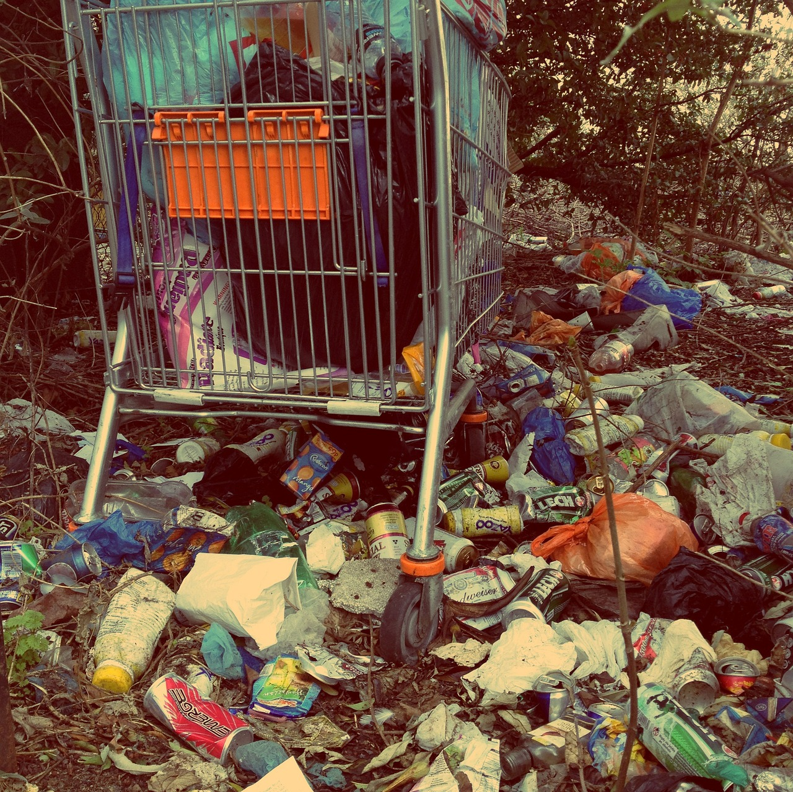

Sobre o Agrinho

A poluição é um problema global que afeta todos os aspectos do nosso planeta.
Seja poluição do ar, da água, do solo ou sonora, suas consequências são graves e abrangentes.
O aumento das emissões de gases poluentes, resultantes principalmente da queima de combustíveis fósseis,
contribui para o aquecimento global e para a deterioração da qualidade do ar que respiramos.
Essa poluição atmosférica não apenas prejudica a saúde humana, causando problemas respiratórios e cardiovasculares,
mas também afeta ecossistemas inteiros, levando a mudanças climáticas, acidificação dos oceanos e perda de biodiversidade.
Desafios

Além da poluição do ar, a contaminação da água é outra grande preocupação.
Descargas industriais, escoamento de fertilizantes agrícolas e resíduos plásticos são apenas algumas das fontes de poluição que afetam rios,
lagos e oceanos em todo o mundo. Essa poluição hídrica não apenas ameaça a vida aquática,
mas também coloca em risco a saúde humana, uma vez que muitas comunidades dependem dessas fontes de água para consumo,
agricultura e recreação. A contaminação do solo também é uma questão crítica, com produtos químicos tóxicos e
resíduos industriais se acumulando e prejudicando a fertilidade do solo, a saúde das plantas e a segurança alimentar.
Contribuição

Além dos impactos ambientais diretos, a poluição também tem consequências econômicas e sociais significativas.
Os custos associados ao tratamento de doenças relacionadas à poluição, à perda de produtividade agrícola e
à degradação dos ecossistemas são enormes. Além disso, a poluição frequentemente afeta desproporcionalmente
comunidades de baixa renda e minorias étnicas, exacerbando as desigualdades sociais. Portanto,
é crucial que medidas sejam tomadas em níveis local, nacional e global para reduzir e prevenir a poluição,
protegendo assim a saúde humana, os ecossistemas e a economia global..
Relogio sobre poluição
Tempo de acabar com a poluição
7
dias
7
horas
7
min
7
seg